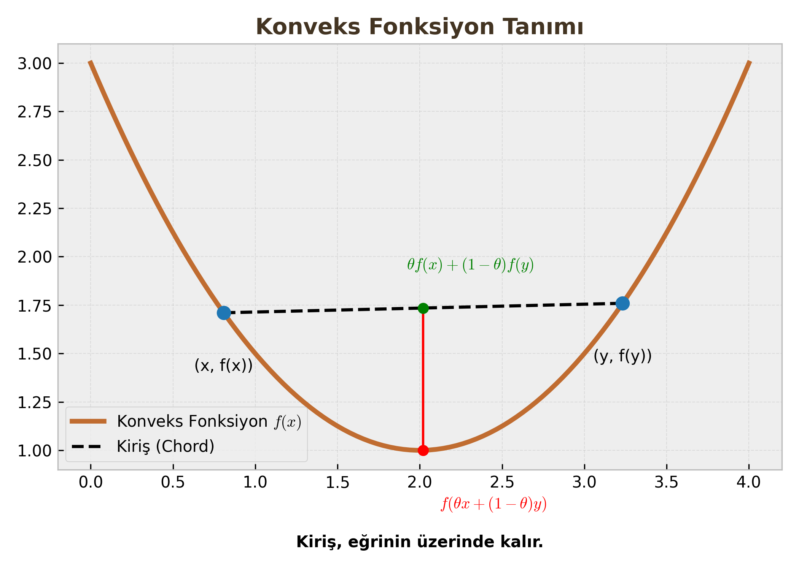
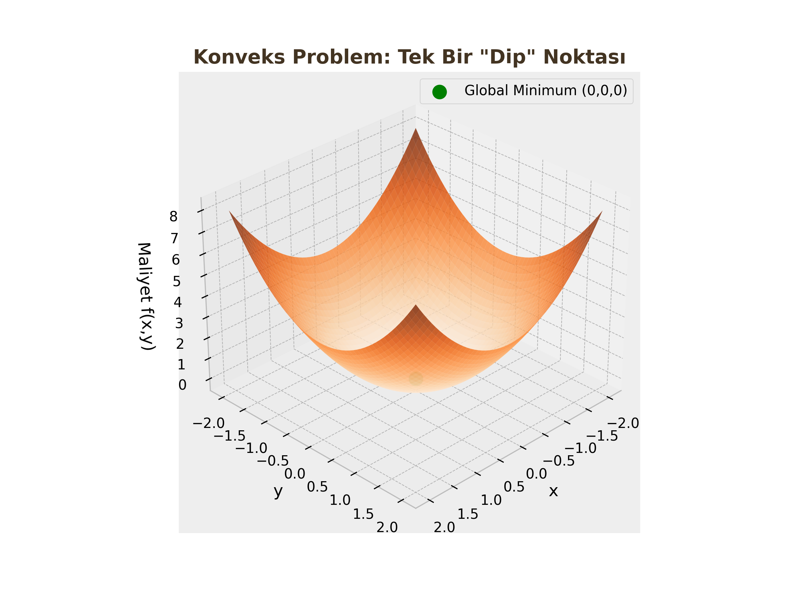

Konvekslik – Fonksiyonlar, Kümeler ve Özellikleri
Yapay zeka modellerini eğitirken (optimize ederken) en büyük korkumuz "Yerel Minimum" (Local Minima) tuzaklarına düşmektir. Ancak probleminiz Konveks ise korkmanıza gerek yoktur. Bu derste konveksliğin matematiğini ve geometrisini inceleyeceğiz.
1. Convex Sets (Konveks Kümeler)
Konveks küme, optimizasyon probleminin "Uygulanabilir Bölgesi"ni (Feasible Region) tanımlar.
Temel Tanım
Bir kümenin ($C$) konveks olması için geometrik kural şudur:
"Küme içindeki herhangi iki noktayı rastgele seçin. Bu iki noktayı birleştiren düz çizgi (doğru parçası), tamamen kümenin içinde kalmalıdır. Dışarı taşamaz."

Matematiksel Şart
Eğer $x$ ve $y$ noktaları $C$ kümesinin elemanıysa ($x, y \in C$) ve $\theta$, 0 ile 1 arasında bir karıştırma katsayısıysa ($0 \le \theta \le 1$);
$$\theta x + (1-\theta)y \in C$$
Burada $\theta x + (1-\theta)y$ ifadesi, $x$ ile $y$ arasındaki doğru parçasını temsil eder.
Önemli Konveks Kümeler
Sınavlarda "Aşağıdakilerden hangisi konveks kümedir?" sorusuyla sık karşılaşılır.
-
Lineer Eşitsizlikler (Yarı Uzaylar): $$Ax \le b$$ Bir uzayı bıçakla ikiye kestiğinizi düşünün. Kalan parça (Yarı Uzay) her zaman konvekstir.
İspat: Lineer Eşitsizliğin Konveksliği
Küme: $$ C = {x \in \mathbb{R}^n : Ax \le b} $$ İspat Mantığı: $x, y \in C$ olsun. $0 \le \theta \le 1$ için $z = \theta x + (1-\theta)y$ alalım. $Az = A(\theta x + (1-\theta)y) = \theta Ax + (1-\theta)Ay \le \theta b + (1-\theta)b = b$. Sonuç: $z \in C$, yani küme konvekstir.
-
Lineer Eşitlikler (Hiper Düzlemler): $$Ax = b$$ Doğrular, düzlemler ve hiper düzlemler konvekstir.
İspat 2: Lineer Eşitliklerin (Hiper Düzlem) Konveksliği
Teorem: $C = {x \in \mathbb{R}^n : Ax = b}$ kümesi konvekstir.
Kanıt:
- $x, y \in C$ olsun. Bu durumda $Ax = b$ ve $Ay = b$ dir.
- Konveks kombinasyon $z = \theta x + (1-\theta)y$ olsun.
- Matris çarpımının lineerlik özelliğini kullanalım: $$ \begin{align} Az &= A(\theta x + (1-\theta)y) \\ &= \theta (Ax) + (1-\theta)(Ay) \\ &= \theta b + (1-\theta)b \\ &= b \end{align} $$ Sonuç: $Az = b$ şartı korunduğu için $z \in C$ dir. Hiper düzlemler konvekstir.
-
Kesişim Özelliği (Intersection): İki veya daha fazla konveks kümenin kesişimi, her zaman konvekstir. (Örn: İki dairenin kesişim bölgesi). $$C_1 \cap C_2 \implies \text{Konveks}$$
İspat 3: Konveks Kümelerin Kesişimi
Teorem: $C_1$ ve $C_2$ konveks kümeler ise, kesişimleri $C_{int} = C_1 \cap C_2$ de konvekstir.
Kanıt: 1. Kesişim kümesinden iki nokta $x, y \in C_{int}$ alalım. 2. Kesişimin tanımı gereği: $x, y \in C_1$ VE $x, y \in C_2$ dir. 3. $C_1$ konveks olduğu için, bu iki noktanın karışımı $z = \theta x + (1-\theta)y$, $C_1$'in içindedir ($z \in C_1$). 4. Aynı şekilde $C_2$ de konveks olduğu için, $z \in C_2$ dir. 5. $z$ hem $C_1$'de hem de $C_2$'de olduğuna göre: $$z \in C_1 \cap C_2$$ Sonuç: Kesişim kümesi konvekstir.
Kritik Sınav Bilgisi
Konveks kümelerin Birleşimi (Union) genellikle konveks DEĞİLDİR. İki ayrı daireyi birleştirirseniz, birinden diğerine çizilen çizgi boşluktan geçer.
2. Convex Functions (Konveks Fonksiyonlar)
Konveks fonksiyon, maliyet (loss) fonksiyonumuzun şeklini tanımlar. Hedefimiz "Çanak" (Bowl) şeklinde bir fonksiyon elde etmektir.
Tanım
Bir fonksiyonun ($f$) grafiğinin üzerindeki iki noktayı birleştiren kiriş (chord), fonksiyon eğrisinin üzerinde veya yukarısında kalıyorsa, o fonksiyon konvekstir.

Matematiksel Şart (Jensen Eşitsizliği Temeli)
Her $x, y$ ve $0 \le \theta \le 1$ için:
$$f(\theta x + (1-\theta)y) \le \theta f(x) + (1-\theta)f(y)$$
- Sol Taraf: Ara noktanın fonksiyon değeri (Eğri üzerindeki nokta).
- Sağ Taraf: Fonksiyon değerlerinin ağırlıklı ortalaması (Kiriş üzerindeki nokta).
Özel Durumlar
-
Konkav Fonksiyon (Concave): Eğer $-f(x)$ konveks ise, $f(x)$ konkavdır. (Tersi dönmüş çanak, tepe şekli). $$f(\theta x + (1-\theta)y) \ge \theta f(x) + (1-\theta)f(y)$$
-
Afin Fonksiyonlar (Doğrusal): $$f(x) = Ax + b$$ Hem konveks hem de konkav olan tek fonksiyon türüdür. (Kiriş, eğrinin tam üstüne düşer).
3. Testing for Convexity (Konvekslik Testleri)
Bir fonksiyonun konveks olup olmadığını grafiğini çizmeden nasıl anlarız? Türev kullanarak.
A. Birinci Derece Türev Şartı (1st Order Condition)
Konveks bir fonksiyon, her noktada kendi teğet doğrusunun (tangent line) yukarısında kalır.
$$f(y) \ge f(x) + \nabla f(x)^T (y-x)$$
Burada $f(x) + \nabla f(x)^T (y-x)$, $x$ noktasındaki Taylor açılımıdır (Teğet Düzlemi).
B. İkinci Derece Türev Şartı (2nd Order Condition) - EN ÖNEMLİSİ
Fonksiyonun eğriliğine (Curvature) bakarız.
1. Tek Değişkenli Fonksiyonlar İçin ($f: \mathbb{R} \to \mathbb{R}$): İkinci türev negatif olmamalıdır. $$f''(x) \ge 0$$ (Eğim sürekli artıyor, yani grafik yukarı kıvrılıyor).
2. Çok Değişkenli Fonksiyonlar İçin ($f: \mathbb{R}^n \to \mathbb{R}$): Hessian Matrisi ($\nabla^2 f(x)$) incelenir. Bu matris Pozitif Yarı Tanımlı (Positive Semi-Definite - PSD) olmalıdır.
PSD Şartı: Herhangi bir $z$ vektörü için; $$z^T \nabla^2 f(x) z \ge 0$$
Öğrenci Notu: Hessian PSD Nasıl Anlaşılır?
Sınavda $2 \times 2$ bir Hessian matrisi verilirse, PSD olduğunu anlamak için: 1. Tüm Köşegen (Diagonal) elemanlar $\ge 0$ olmalı. 2. Determinant $\ge 0$ olmalı. 3. (Veya) Tüm Özdeğerler (Eigenvalues) $\ge 0$ olmalı.
4. Konveks Optimizasyonun Kutsal Kasesi
Neden konvekslikle bu kadar uğraşıyoruz? Çünkü optimizasyon dünyasının en güçlü teoremi buradadır.
Tanımlar
- Lokal Optimum: Komşuları arasında en iyi olan çözüm.
- Global Optimum: Tüm uzaydaki en iyi çözüm.
Non-convex problemlerde (dağlar ve vadiler) birçok yerel dip nokta olabilir ve algoritmamız buralara takılabilir.
Temel Teorem
"Konveks bir optimizasyon probleminde (Amaç fonksiyonu konveks + Kısıt kümesi konveks), bulunan herhangi bir lokal optimum, aynı zamanda GLOBAL OPTIMUMDUR."
Bu demektir ki; eğer probleminizin konveks olduğunu ispatlarsanız, Gradient Descent ile bulduğunuz sonucun "En iyi sonuç" olduğundan %100 emin olabilirsiniz.
Temel Teorem
"Konveks bir optimizasyon probleminde (Amaç fonksiyonu konveks + Kısıt kümesi konveks), bulunan herhangi bir lokal optimum, aynı zamanda GLOBAL OPTIMUMDUR."
Bu demektir ki; eğer probleminizin konveks olduğunu ispatlarsanız, Gradient Descent ile bulduğunuz sonucun "En iyi sonuç" olduğundan %100 emin olabilirsiniz.
İspat: Yerel Minimumun Global Oluşu
Teorem: $f(x)$ konveks bir fonksiyon ise, herhangi bir yerel minimum ($x^{\ast}$) aynı zamanda global minimumdur.
Kanıt (Çelişki Yöntemi ile):
- Varsayım: Diyelim ki $x^{\ast}$ bir yerel minimumdur ancak global minimum değildir.
- Global Minimumun Varlığı: Bu durumda, tanım kümesi içinde $f(y) < f(x^{\ast})$ şartını sağlayan başka bir $y$ noktası (global minimum) bulunmalıdır.
- Ara Nokta Seçimi: $x^{\ast}$ ile $y$ arasında bir $z$ noktası tanımlayalım. $\theta$, 0 ile 1 arasında çok küçük bir sayı olsun ($0 < \theta \le 1$): $$z = \theta y + (1-\theta)x^{\ast}$$ ($\theta$ yeterince küçük seçildiğinde, $z$ noktası $x^{\ast}$'ın "yerel komşuluğuna" girer).
- Konvekslik Tanımı: $f$ fonksiyonu konveks olduğu için Jensen eşitsizliği geçerlidir: $$f(z) \le \theta f(y) + (1-\theta)f(x^{\ast})$$
- Eşitsizlik Analizi: $f(y) < f(x^{\ast})$ olduğunu biliyoruz. Bunu eşitsizliğin sağ tarafına uygularsak: $$ \begin{align} f(z) &\le \theta f(y) + (1-\theta)f(x^{\ast}) \\ &< \theta f(x^{\ast}) + (1-\theta)f(x^{\ast}) \quad (\text{Çünkü } f(y) < f(x^{\ast})) \\ &= (\theta + 1 - \theta)f(x^{\ast}) \\ &= f(x^{\ast}) \end{align} $$
- Çelişki: Sonuç olarak $f(z) < f(x^{\ast})$ bulduk. Yani $x^{\ast}$'ın çok yakınında, ondan daha küçük değere sahip bir $z$ noktası var. Bu durum, $x^{\ast}$'ın yerel minimum olması tanımıyla çelişir.
- Sonuç: Varsayım yanlıştır. Konveks bir fonksiyonda $x^{\ast}$ yerel minimum ise, zorunlu olarak global minimumdur.

Özet Tablo
| Özellik | Konveks Problem | Non-Convex Problem |
|---|---|---|
| Minimum Sayısı | Tek (veya bitişik düzlük) | Birden fazla olabilir |
| Lokal vs Global | Lokal = Global | Lokal $\neq$ Global olabilir |
| Çözüm Zorluğu | Kolay (Polinomsal Zaman) | Zor (NP-Hard olabilir) |
| Örnek | Lojistik Regresyon, SVM | Derin Sinir Ağları (Deep NN) |